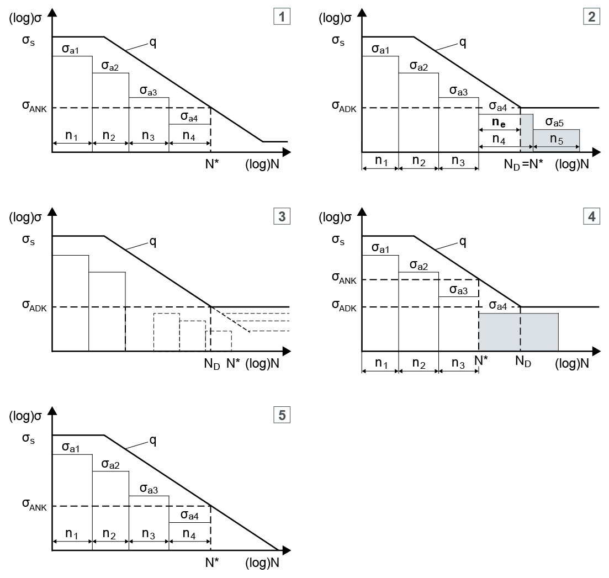

|
|
|


计算类型
您可以使用以下四种不同方法之一进行安全分析：
- 静态。计算相对于屈服的强度安全系数。
- 无限寿命强度。计算相对于无限寿命强度的安全系数（在 S-N 曲线（沃勒线）的水平段中，不使用载荷谱）
- 有限寿命。计算给定循环次数下相对于疲劳的安全系数。此处使用恒定载荷（不使用载荷谱）。根据 AGMA 的计算方法只定义单级载荷谱。单级载荷谱在 FKM 方法中单独处理。根据 DIN 743 和 FKM 中定义的方法，S-N 曲线（沃勒线）在达到载荷循环次数极限 ND (10^6) 后水平延伸。
- Miner 连续/基本/扩展。这些方法在计算 S-N 曲线（沃勒线）在拐点循环次数以上部分的斜率方式上有所不同。

图 26.2：Miner 假说
- 图例：
- 1) 遵循 FKM 的 Miner 基本法
- 2) 根据 DIN 743-4:2012 的 Miner 扩展法
- 3) 遵循 FKM 指南的 Miner 连续法
- 4) 根据 Haibach 的 Miner 原法
- 5) 根据 Haibach 的 Miner 基本法
- 灰色区域是被忽略的部分。
注意
根据 Miner 的计算方法只有在您在 输入窗口的 下拉列表中选择了 选项时才可用。载荷谱（参见"定义载荷谱"章）可以在 KISSSOFT 数据库工具中定义。然后您只需在计算中选择它们即可。
English Original
Type of calculation
You can perform a safety analysis using one of these four different methods:
- Static. Calculates the safety against yield safety.
- Infinite life strength. Calculates the safety against the infinite life strength (in the horizontal section of the S-N curve (Woehler lines), no load spectrum used)
- Limited life. Calculates the safety against fatigue for a given number of cycles. Here, a constant load is used (no load spectra). The calculation method according to AGMA only defines a one-step load spectrum. A one-step load spectrum is handled separately in the FKM method. According to the methods defined in DIN 743 and FKM, the S-N curve (Woehler lines) runs horizontally after it reaches the number of load cycles limit ND (10^6).
- Miner consequent/elementary/extended. These methods differ in the way they calculate the inclination of the S-N curve (Woehler lines) above the number of breakpoint cycles.
Figure 26.2: Miner hypotheses
- Legend:
- 1) Miner elementary following FKM
- 2) Miner extended in acc. with DIN 743-4:2012
- 3) Miner consequent following FKM guideline
- 4) Miner original according to Haibach
- 5) Miner elementary according to Haibach
- The gray fields are the fractions that are ignored.
Note
The calculation methods according to Miner are only available if you have selected the option in the drop-down list in the input window. Load spectra (see chapter Define load spectrum) can be defined in the KISSSOFT database tool. You then only need to select them in the calculation.